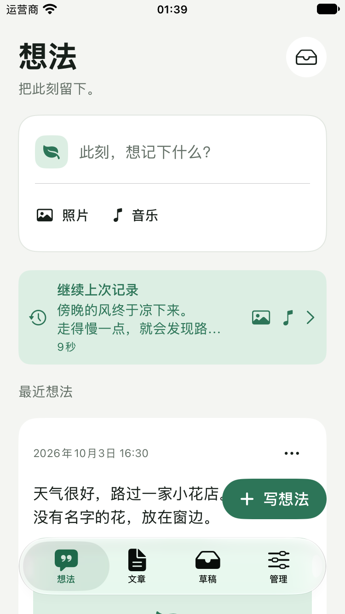
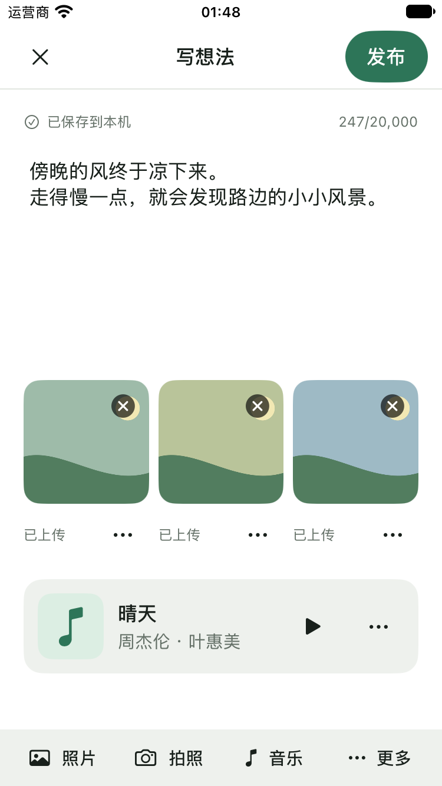
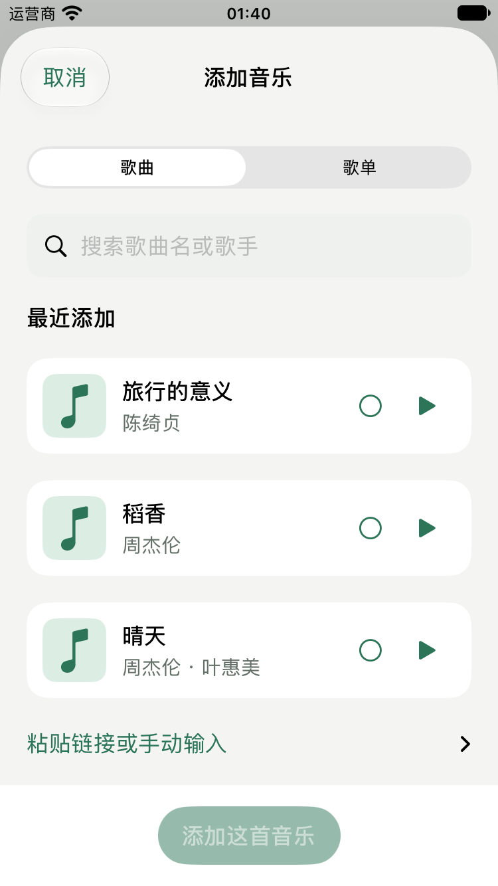
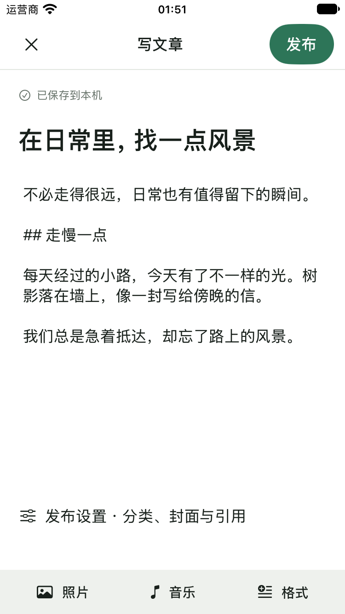
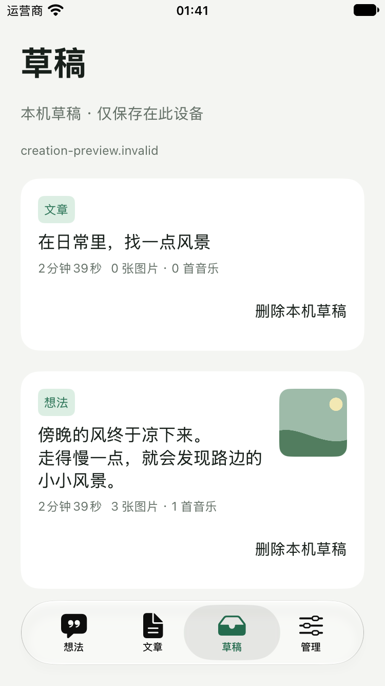
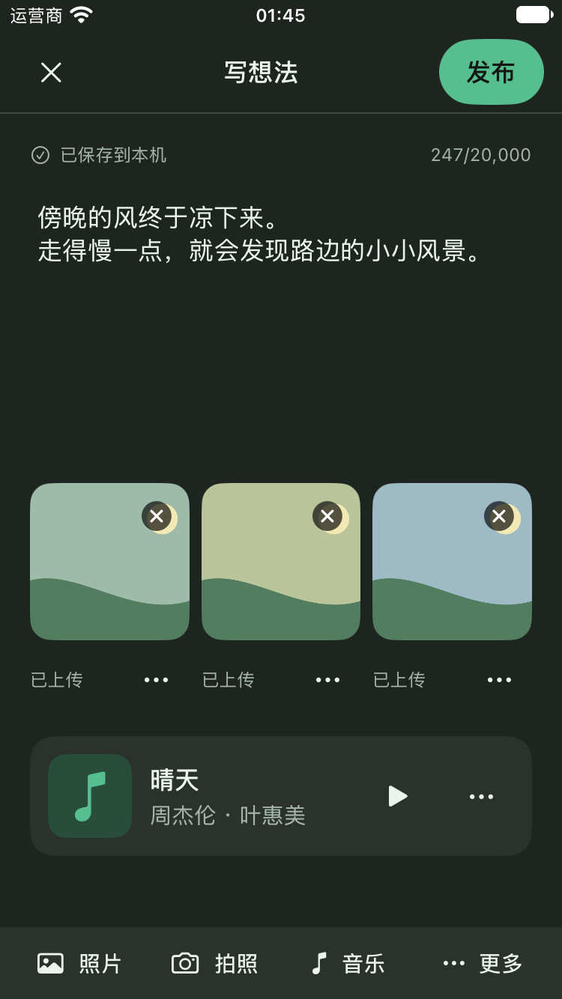

YEZI / NATIVE REVIEW
从想法开始，把日常留下。
这不是网页模拟的手机界面：以下是 SwiftUI 实现在 iOS 27 模拟器上的真实截图。所有内容来自离线演示数据，未上传或发布到你的站点。主要页面采用 375pt 小屏，点击图片可查看原始尺寸。






这不是网页模拟的手机界面：以下是 SwiftUI 实现在 iOS 27 模拟器上的真实截图。所有内容来自离线演示数据，未上传或发布到你的站点。主要页面采用 375pt 小屏，点击图片可查看原始尺寸。





